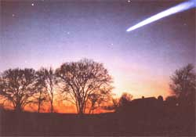
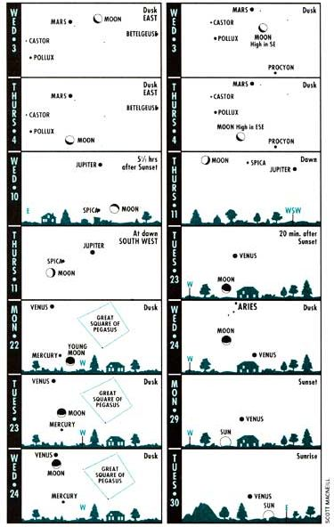

SEASONS
Sure-fire ways to tell that springtime is near.
If you're dreaming of warmer weather, outdoor walks, and starting up your outdoor garden again, you're not alone. Most of us are anxiously waiting for the return of the robin--herald of spring. In fact, Americans get so hyped-up for the upcoming season that we have actually created a day for trying to predict when spring will arrive (a.k.a. Groundhog Day). Sure we still have the rest of winter to endure, but we can pursue the subject of spring's arrival--in the calendar, the weather, the living world, the heavens, and the holidays.
Technically, spring begins in the Northern Hemisphere when the sun moves northward enough to pass overhead as seen from Earth's equator. We call this point-and the sun's reaching of it-the spring, or vernal equinox. (Equinox means "equal night," referring to the fact that day and night are equal in length at this time of year.) It is also at spring equinox (and autumn equinox) that people all over the world can see the sun rise exactly due east and set exactly due west.
The first day of spring always falls on one of two days: March 20 or 21. This year, 0you can celebrate on March 20 at 9:42 A.m., Eastern Standard Time. Will that be the moment when we feel warmer, see a burst of green around us, smell flowers leaping into bloom? Doubtful. As Henry Van Dyke put it in Fisherman's Luck, "The first day of spring is one thing, and the first spring day is another. The difference between them is sometimes as great as a month." Also, a first spring day is generally followed by a few cold snaps and a return to winter, a kind of reversed Indian Summer. On March 7, 1855, Henry David Thoreau noted in his journal: "The first pleasant days of spring come out like a squirrel and go in again."
Most of us have learned to expect nothing from March except the unexpected. We should be well aware that weather in this month is a throw of the dice, a total gamble. In fact, March is appropriately named for the Roman war god, Mars, since no other month brings such a war between warm and cold, between winter's refusal to leave and spring's insistence on coming. If March 1 is a peaceful, almost balmy day, you can be relatively sure that March 31 will be stormy and cold.
Most people tend to recall the spectacular; in weather, this means storms. The frequency of tornadoes takes a leap up in March, most of them occurring well south in the Gulf states. Some parts of the country may experience violent thunderstorms, followed by blizzards or ice storms. I recall that March of 1989 in our town was a month of flu, 4" of sleet on the ground, tornado watches, and one of the most spectacular Northern Lights displays of our lives-all these happenings violent or eerie, unsettling and potent, and sometimes occuring with great beauty, as in the case of the Northern Lights. March has been the month of the most devastating tornado and the most famous blizzard ever (see "Almanac Timetable").
But then, just when you can't stand it anymore, when you are sick of bulky sweaters and sore throats, March brings us closer to the equinox-the sun gets higher and the days lengthen more rapidly. December, January, and February are the true winter months; March makes a stride towards what most of us think is the most delicious of outdoor weather. The proof is in March's effects on plants and animals.
Although the length of day plays a direct role in starting changes in plants and migrations in animals, much also depends on temperature. Spring peepers don't begin their calling until the average temperature rises above about 50°F, but the most famous animal indicator of spring moves north in both the eastern and western United States, almost precisely with the 37°F line. That is the air temperature at which the ground is generally thawed enough to permit earthworms to come to the surface-where they will soon become the meal of the arriving robin.
In reality, robins aren't entirely absent throughout the United States during winter. The catch is that robins who live quite far north in summer may not go as far south. For instance, Canadian robins may be seen in winter in the mid-Atlantic states. Nevertheless, their numerous arrival in March is a noticeable event. Incidentally, it's male robins who show up first; females arrive weeks later, setting the males to singing, as mating and territory rituals begin.
Americans get so hyped-up about the coming of spring that we actually created a day for
groundhogs to predict its arrival.
In March, the southernmost United States sees oats and corn and other spring crops coming out of the ground. Spring wheat is planted in the southern part of the wheat belt. Fruit trees blossom across much of the South. But in the northern states, only a few hard plants are sprouting, and a few of the earliest flowers and flowering bushes are putting forth their blossoms.
Regardless of weather, February and March evenings bring forth the same familiar constellations in the sky each year. The brightest star, Sirius, twinkles mostly blue-white in the South. Over in the Northeast, the Big Dipper stands on its handle like a giant question mark in the early evening. One sure sign of spring coming is Leo the Lion, with his heart-star Regulus, rising in the East after nightfall. But in February-March 1993, the constellations are upstaged by four bright evening planets, two of which-Mercury and Venus-are at their highest due to spring's celestial geometry.
Mercury never sets too long after the sun. But for about a week before and week after February 21 this year, you may spot it as a fairly bright point of light low in the West, roughly 45 minutes after sunset.
Venus is now so brilliant that it may be mistaken for an airplane or reported as a UFO; you may be able to find it, about halfway up the Southwest sky, even before sunset. The most spectacular sky sight for the whole United States in the first five months of 1993 may be the very close pairing of Venus and the crescent Moon at nightfall on February 24 (see diagram on page 19). That night, Venus is at its greatest brilliancy and may actually surpass the thin Moon's brightness.
As March begins, Venus is setting more than three hours after the sun, but by month's end it will sink below the horizon only a few minutes after the sun does. This is Venus' most dramatic exit from the evening sky in eight years and offers us our best chance to see several amazing sights: the long skinny crescent phase of Venus in steadily held binoculars; Venus as
"Evening Star" one night and "Morning Star" the next morning (see diagram).
Our other evening planets are Mars and Jupiter, and both are now excellent to turn your telescope towards, if you have one. (See accompanying diagrams to help find them.)
-In January or early February, you may be so desperate for spring that you are ready to believe a colorful piece of weather lore which, in fact, has no real basis. Welcome to Groundhog Day.
February 2 is about halfway between the winter solstice and spring equinox. Thus it became one of the year's four "cross-quarter days," halfway between the starts of the seasons. And this seemed an appropriate time to try and judge what the second half of winter would be like: "If candlemas be fair and bright/Winter will have another flight/But if it be dark with clouds and rain/Winter is gone, and will not come again." Why would a fair day suggest that the rest of winter would be cold? Fair days in winter do tend to be somewhat colder, but the fact is that February 2 fair and cold tells nothing of what the days ahead will be like.
The groundhog theme probably came from the idea of hibernating animals coming out, finding the air too cold, and going back to wait out more winter. Whatever the case, tradition arose from Great Britain and Germany, where it was the bear or badger that came out. In the eastern United States-the groundhog (woodchuck) has been substituted. And one particular groundhog in Pennsylvania has become the media's star performer in this supposed predicting act.
FEBRUARY
MARCH
Almanac for February and March 1993
(All times given in Eastern Standard Time.)
February
1 First Quarter Moon (6 p .m.)
2 Candlemas; Groundhog Day
6 Full Moon (7 P .m.)
12 Lincoln's Birthday (1809)
13 Last Quarter Moon (10 A.M.)
14 St. Valentine's Day
15 Presidents Day
21 New Moon (8 A.M.); Mercury at greatest evening elongation
22 Washington's Birthday (1732)
23 Mardi Gras
24 Ash Wednesday; spectacular Venus-Moon conjunction (see text and diagram)
March
1 First Quarter Moon (11 A.M.)
8 Full Moon (Closest for year, so expect high tides!)
9 Moon near Jupiter this evening
12 Blizzard of '88 (1888) in full fury in NY, New England
14 Last Quarter Moon (11 P .m.)
17 St Patrick's Day
18 Tri-state Tornado killed 695 in Missouri, Illinois, and Indiana (1925)
19 The swallows return to San Juan Capistrano, California
20 Spring equinox (9:41 A.M.)
21 Moon at farthest of year (2 P.M.)
23 New Moon (2 A.M.); look with binoculars 20 minutes after sunset for ultra-thin moon well below Venus!
24 Lovely thin moon to upper left of Venus at nightfall
25 Annunciation, or Lady Day
Moon near the Pleiades star cluster tonight, near star Aldebaran tomorrow night
29 Jupiter is brightest, and at 'opposition," rising in the east at sunset; (binoculars recommended for best view; see diagrams)
|
 While this season's weather is not totally unreliable, you can caount on the same consterllation every year. |
 Diagrams for dusk and dawn show scenes about 45 minutes after sunset or before sunrise, as viewed from 40` west latitude (approximately correct for the United States or southern Canada). ""Age"" of the moon is amount of time since New Moon. -Adapted from Sky Calendar, Abrams Planetarium, Michigan State University, East Lansing, Michigan 48824. |
|